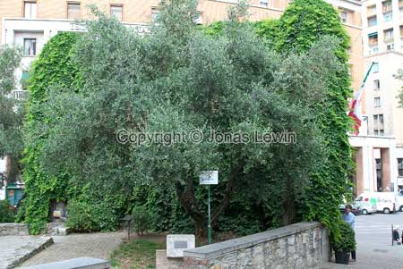
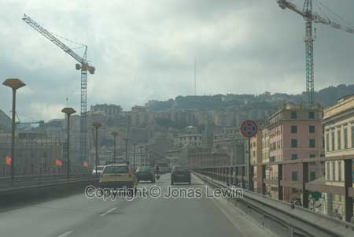

This is his house, from a different angle, so be careful that you don't miss it. Some large signs would be nice to tell us that this is what we are searching for.
 Like
all large cities, Genova is also always under construction.
Like
all large cities, Genova is also always under construction.And they also have a big square/plaza where people can marvel at the wonders of the city.
It also has it's share of small charming streets where few people are actually walking.
And the city center is packed with small shops, bars, and ice-cream shops. Nothing green, just concrete and stone. The only green showing is the green neon.
Italian Air-condition ;-). Just kidding. I think that this is their way of blocking the sun during the hot days.
Arriving, using the highway, Genova is not an attractive city. Even if the city is just by the ocean, the air is not that clean.